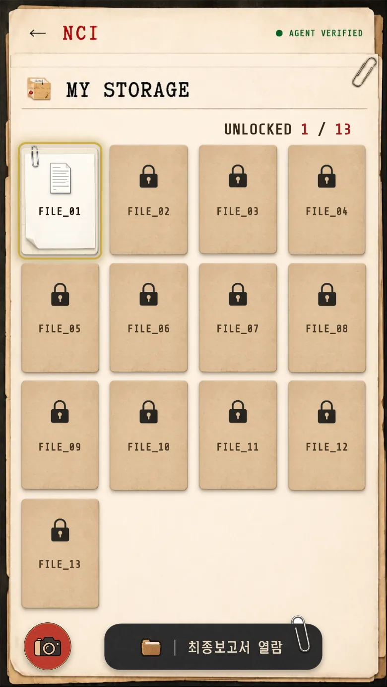
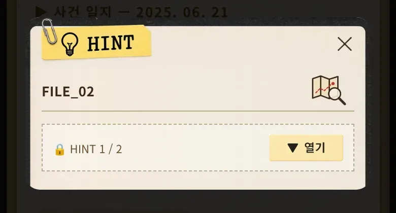
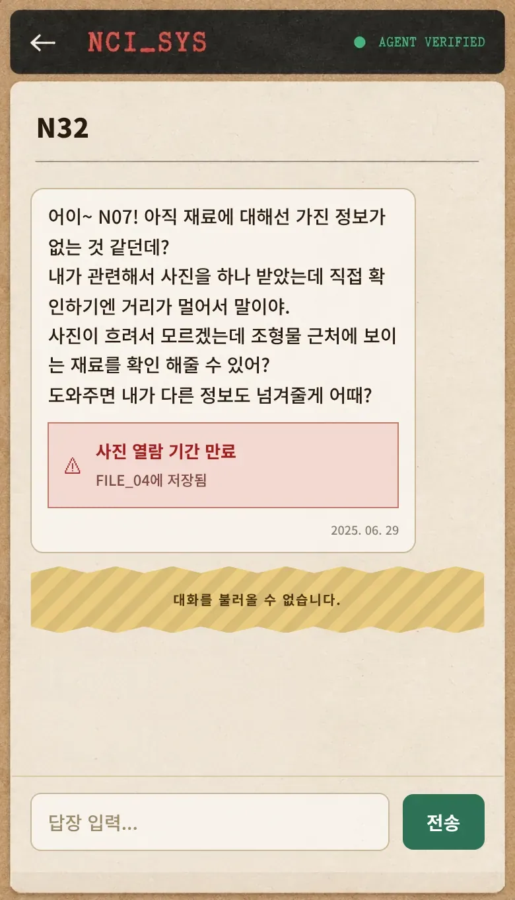

시작 전에
이것만 알고 가세요
게임 화면 구성, 푸는 순서, 힌트·지도 보는 법을 정리했어요.
3줄 요약
- MY STORAGE의 FILE_01부터 순서대로 풀어요.
- 열린 파일의 단서로 현장에서 답을 찾고, 그 답을 다음 파일의 잠금 코드로 입력해요.
- 막히면 파일 화면 오른쪽 아래 💡 버튼. 다음 장소 지도도 힌트 창 안에 있어요.
01
시작하기
1
게임 접속 후 [수사 시작]로딩이 100%가 되면 버튼이 눌려요.
2
오프닝 이야기화면을 탭하면 다음 장면으로 넘어가요. 4장면이 끝나면 게임 화면으로 들어가요.
3
요원 프로필 화면 도착여기가 첫 화면(홈)이에요. 아래쪽 [MY STORAGE 열람]을 눌러 문제를 풀러 가요.
📍출발 장소: 홍대입구역 3번 출구 근처에서 시작하면 편해요.
02
화면 구성
게임은 크게 프로필 화면과 MY STORAGE(파일 보관함) 두 곳을 오가며 진행돼요.
① 프로필 화면 (홈)

1
2
3
- 1미션이번 수사의 최종 목표예요. 누르면 크게 볼 수 있어요.
- 2메시지다른 요원들과 주고받는 메시지. 진행 중에 답장을 보내야 하는 순간이 와요.
- 3MY STORAGE 열람문제(파일)가 들어 있는 보관함으로 이동해요. 실제 문제 풀이는 여기서 시작해요.
② MY STORAGE (파일 보관함)

1
2
3
4
- 1FILE_01 — 여기서부터 시작!처음에는 이 파일만 열려 있어요. 눌러서 내용을 읽어 보세요.
- 2잠긴 파일앞 파일에서 얻은 답(코드)을 입력해야 열려요. 순서대로만 열 수 있어요.
- 3현장분석 카메라파일에서 카메라를 쓰라고 할 때만 사용해요.
- 4최종보고서수사하며 알아낸 정보를 마지막에 입력해 제출해요.
⚠️오른쪽 위 UNLOCKED 1 / 13은 지금까지 연 파일 수예요. 아직 안 연 파일을 누르면 “이전 파일을 먼저 해제하세요”가 떠요. 바로 앞 파일부터 풀어 주세요.
03
문제 푸는 방법
모든 파일은 같은 방식으로 반복돼요.
1
열린 파일을 읽는다사건 일지, 사진, 음성 기록을 확인해요. 노란 형광펜 부분이 핵심 단서예요.
2
현장으로 이동한다파일 속 장소를 찾아가요. 위치가 헷갈리면 힌트 창의 지도를 열어요.
3
현장에서 답을 찾는다표지판, 조형물, 벽화 등 실제 거리에 있는 것에서 답이 나와요.
4
다음 파일에 코드 입력MY STORAGE로 돌아가 바로 다음 잠긴 파일을 누르고 답을 입력하면 열려요.
↻ 새로 열린 파일로 1번부터 반복
파일 화면

1
2
- 1형광펜 표시문제를 푸는 데 꼭 필요한 정보예요. 아래로 스크롤하면 사진·음성이 더 있을 수 있어요.
- 2💡 힌트 버튼파일 화면 오른쪽 아래에 있어요. 힌트와 지도를 볼 수 있어요.
잠금 코드 입력

1
2
- 1칸 수 = 글자 수앞에 AB-처럼 이미 적힌 부분은 빼고 나머지만 입력해요.
- 2코드 입력 후 [UNLOCK]영어는 대문자·소문자 상관없어요.
04
힌트 · 지도 보는 법

1
2
- 1🗺️ 지도 아이콘힌트 창 오른쪽 위. 누르면 이 파일의 장소 지도가 열려요. 지도는 따로 메뉴가 없고 여기에만 있어요.
- 2[열기]힌트를 한 단계씩 열어요. 힌트를 다 열면 마지막에 정답 및 해설도 볼 수 있어요.
💡힌트는 지금 보고 있는 파일의 문제에 대한 힌트예요. 다른 파일의 힌트를 보려면 그 파일을 열고 💡를 눌러 주세요.
🗺️FILE_01은 지도가 없어요. 홍대입구역 3번 출구 근처에서 사진 속 장소를 찾아보세요.
05
그 밖의 기능
💬
메시지 답장파일에서 “메시지로 알려줘라”는 내용이 나오면, 프로필 화면 → 해당 메시지를 열고 아래 입력창에 답을 보내요.

현장분석 카메라MY STORAGE 왼쪽 아래 빨간 버튼. 새 창이 열리고 카메라 권한을 물어보면 ‘허용’을 눌러 주세요.
📋
최종보고서MY STORAGE 아래 [최종보고서 열람]. 중간에 알아낸 내용을 미리 적고 임시저장해 둘 수 있어요.
🎧
음성 기록일부 파일에 음성 파일이 있어요. 재생이 어려우면 스크립트 보기로 글로 읽을 수 있어요.

1
- 1답장 입력창메시지 화면 맨 아래. 답을 적고 [전송]을 누르면 상대가 답해 줘요.
06
주의사항
- 새로고침·창 닫기 금지브라우저를 새로고침하거나 창을 닫으면 진행 상황이 사라질 수 있어요. 뒤로 갈 때는 게임 화면 왼쪽 위 ←를 눌러 주세요.
- 안전 먼저걸으면서 화면을 보지 말고, 차도·골목에서는 멈춰서 확인해 주세요.
- 주변에 방해되지 않게가게·주택가 근처 장소가 있어요. 시설물을 만지거나 떼어내지 말고, 큰 소리는 삼가 주세요.
- 배터리·데이터 확인계속 화면을 켜고 이동해요. 충전된 휴대폰(보조배터리 추천)과 데이터가 필요해요.
- 이어폰 챙기기음성 기록을 길거리에서 듣기 편해요.
- 밝을 때 플레이 추천현장의 작은 글씨나 그림을 찾아야 해서 어두우면 어려워요.
07
자주 묻는 질문
어떤 문제부터 풀어야 하나요?
MY STORAGE의 FILE_01부터예요. 처음에는 FILE_01만 열려 있고, 이 파일을 풀면 나오는 답으로 FILE_02를 열 수 있어요.
잠긴 파일을 눌렀는데 “이전 파일을 먼저 해제하세요”가 떠요.
파일은 순서대로만 열려요. 가장 마지막으로 연 파일의 바로 다음 파일을 눌러 주세요.
코드를 맞게 넣은 것 같은데 안 열려요.
앞에 이미 적힌 글자(예: AB-)는 빼고 입력했는지 확인해 주세요. 칸 수와 글자 수가 같아야 해요. 그래도 안 되면 앞 파일의 💡 힌트에서 정답을 확인할 수 있어요.
다음 장소가 어디인지 모르겠어요.
지금 열려 있는 파일에서 💡 버튼 → 힌트 창 오른쪽 위 🗺️ 지도 아이콘을 눌러 주세요.
힌트 버튼이 안 보여요.
💡 버튼은 파일을 열었을 때만 나타나요. 프로필 화면이나 MY STORAGE 화면에는 없어요.
현장분석 카메라가 안 켜져요.
새 창에서 카메라 권한을 ‘허용’해야 해요. 이미 거부했다면 브라우저 설정에서 카메라 권한을 다시 켜 주세요.
준비됐으면 FILE_01부터 시작해 보세요!
▶ 게임 시작